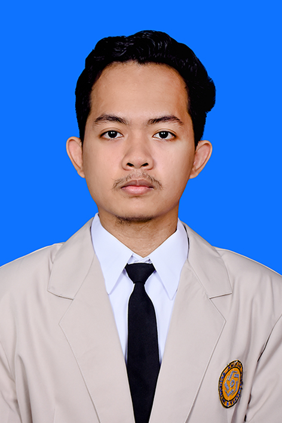

Tentang Saya
Halo, Nama saya adalah Zulfa Fakaha, saya berasal dari Bantul, Daerah Istimewa Yogyakarta dan berkuliah di Universitas Amikom Yogyakarta program studi Informatika, saya sangat tertarik belajar pemrograman web khususnya front end. Untuk menambah skill dalam pemrograman dan belajar berorganisasi saya mengikuti organisasi kampus di bidang IT yaitu Amikom Computer Club (AMCC)